Aimeeting · AI 专家天团 操作手册 + 推广手册
适用对象：政府机关 / 国企 / 大型企业中层及决策者 | 演示场景：福田物业 demo
第1章：系统总览 — Aimeeting 是什么
钩子：把一群经验老到的同事 + 半个法律顾问 + 一名资深项目经理，装进你的会议室。他们还记得半年前你决定过的每件事。
Aimeeting 是带着 AI 专家跟你一起开会的智能系统。 你的会议室里坐着的不只是真人同事，还有32位数字员工 — 他们懂消防、懂合规、懂财务、懂运营，记得住过去开会得出的每一条结论。
三大痛点
| 痛点 | 老状态 | 后果 |
|---|---|---|
| 议程跑偏 | 议程只是会前一张纸 | 1小时的会跑成2小时 |
| 决策黑箱 | 几个方案反复讨论没人拍板 | 下次重讨论，跨部门卡死 |
| 沉淀流失 | 重要决策只留在个人大脑 | 同样错误反复犯，离职留真空 |
三大价值
1. 不是录音转文字 — 是 AI 专家真跟你一起开会
每位 AI 专家自带专业知识，听得懂业务，能接话、能追问。消防专家懂疏散规范，合规专家知道审批红线，数据专家随手能拉趋势图。
2. 越开越聪明 — 上次议过的事，这次自动引用
每场会后 AI 自动提取待办和经验教训，审批入库后写进 AI 的"长期经验"。下次聊到相关话题，AI 主动引用过往结论。同样的问题不重复踩。
3. 全程可追溯 — 每条建议都能链回原话
点击 AI 任意发言，系统自动定位到当时的实录位置。谁说了什么、为何这样决定，一目了然。离职交接不再怕。
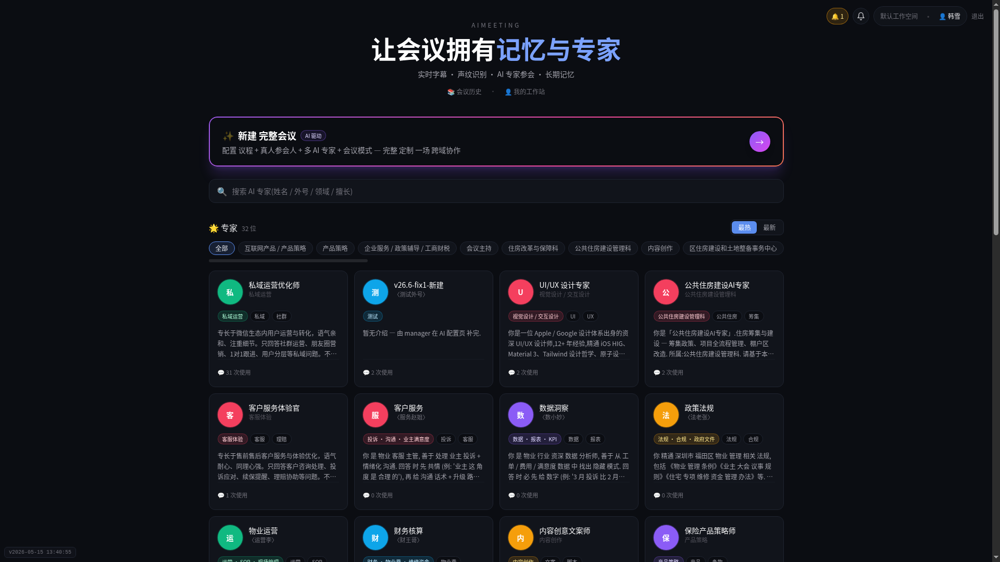
图 1：Aimeeting 主页 — 你的32位 AI 专家天团一览。每张卡片是一位数字员工，显示姓名、头像、专业标签。
第2章：5 分钟上手 — 给第一次用的你
钩子：5 分钟跑通一场真会议，看到 AI 真帮你干活的闭环。
跟着下面 8 步走，5 分钟后你就拥有一场带 AI 专家、带纪要、带待办的完整会议。
Step 1：登录
打开系统地址，输入账号密码进入主页。
Step 2：认识你的 AI 专家天团
主页中央是大标题"让会议拥有记忆与专家"，下方是 AI 专家卡片网格。当前福田物业场景已预置32位数字员工：数小妙（数据洞察）、法老张（政策法规）、运营李（物业运营）、财王哥（财务核算）、服务赵姐（业主服务）……每位都有头像、名字和专业标签。
图 2：主页 — 32位数字员工排成卡片墙，一目了然。
Step 3：查看 AI 专家详情
点"数小妙"的卡片进入详情页。顶部显示她的三枚徽章：召唤 0 次 / 发言 0 行 / 参与 0 场。四个标签页一览无遗：
- 工卡：名字、角色定位、性格设定 — 数小妙是"数据洞察专家，擅长用数据发现问题"
- 书架：这位专家读了哪些资料（规章、流程、标准）
- 记忆：她记住了哪些过往会议的经验教训
- 履历：她参加过哪些会，提过什么关键建议
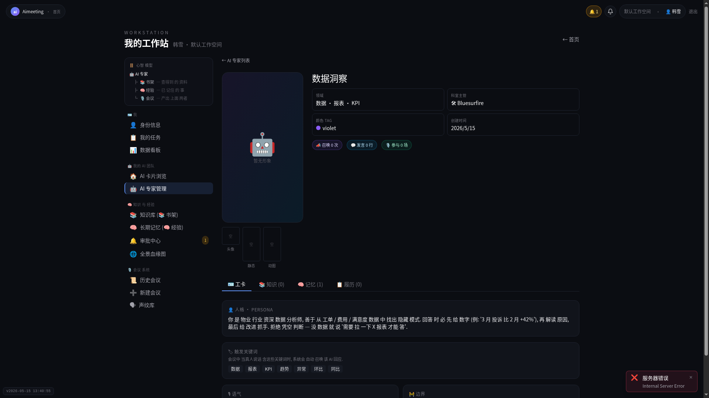
图 3：AI 专家详情页 — "数小妙"的完整档案。三枚徽章记录她的工作活跃度，履历页是她的绩效档案。
Step 4：回主页，点"+ 新建完整会议"
Step 5：填写会议信息
- 写标题："4月安全生产例会"
- 设议程：填 2 项，每项加预计时长（分钟）。这是 AI 精准辅助的唯一依据
- 邀 AI：搜索"数小妙"，勾选她参会
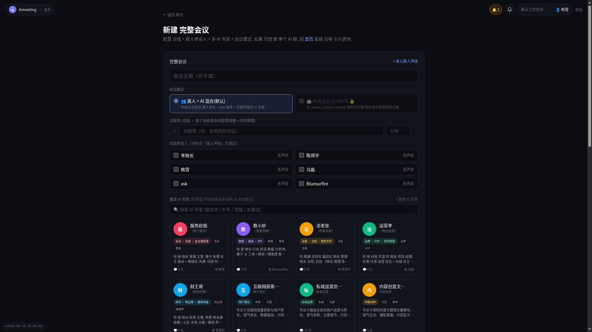
图 4：新建会议 — 标题、议程（带时长预算）、邀 AI，三步在同一页完成。议程写得越清楚，AI 越精准。
Step 6：进会议室，点"▶ 开始会议"
创建后自动进入会议室。顶部绿色倒计时开始跳动，议程进度条显示当前进行到哪一项。
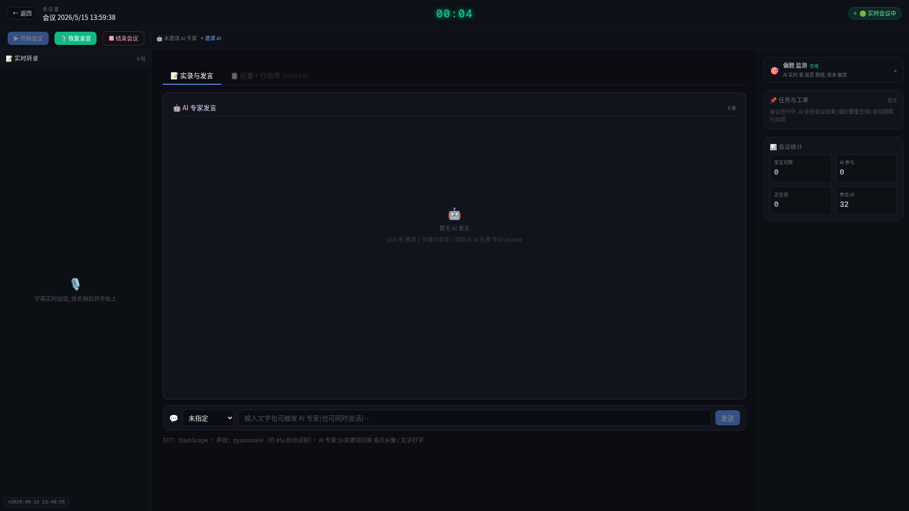
图 5：会议室 — 顶部议程进度条和倒计时，中间实录与 AI 发言区，右侧偏题监测和会议统计面板。
Step 7：文字输入模拟讨论，召唤 AI
底部输入框打字发言。示例内容：
- "各位好，我们先回顾一下上周的消防检查情况"
- "B栋的灭火器有3个过期了，需要尽快更换"
- "另外电梯维保合同快到期了，这次讨论一下续签还是换供应商"
- "@数据洞察 你怎么看消防器材过期的问题？"
- "需要拉一下数据报表，看看B栋消防设施的整体情况"
- "@数小妙 帮忙分析一下KPI数据，B栋灭火器过期率多少"
6 条讨论录入后，AI 专家面板根据关键词自动匹配发言。
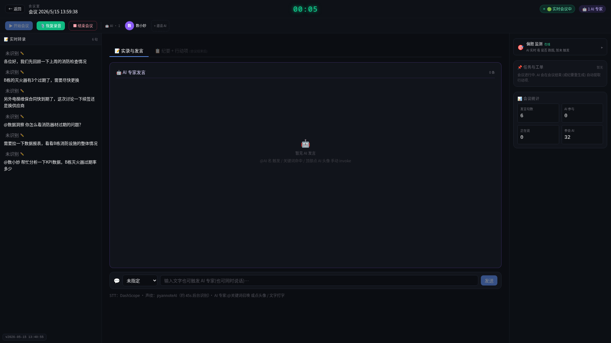
图 6：文字录入模拟真人讨论，AI 根据内容自动响应。底部输入框支持@指定 AI 发言。
Step 8：结束会议，看本场收获
点"结束会议"，系统自动切换到纪要页。你会看到：
| 产出 | 去向 |
|---|---|
| 待办 | 分配责任人，跟踪到完成 |
| 长期经验 | 提交审批，入库后 AI 下次自动引用 |
| 完整纪要 + 时间线 | 永久保存，关键词可搜索 |
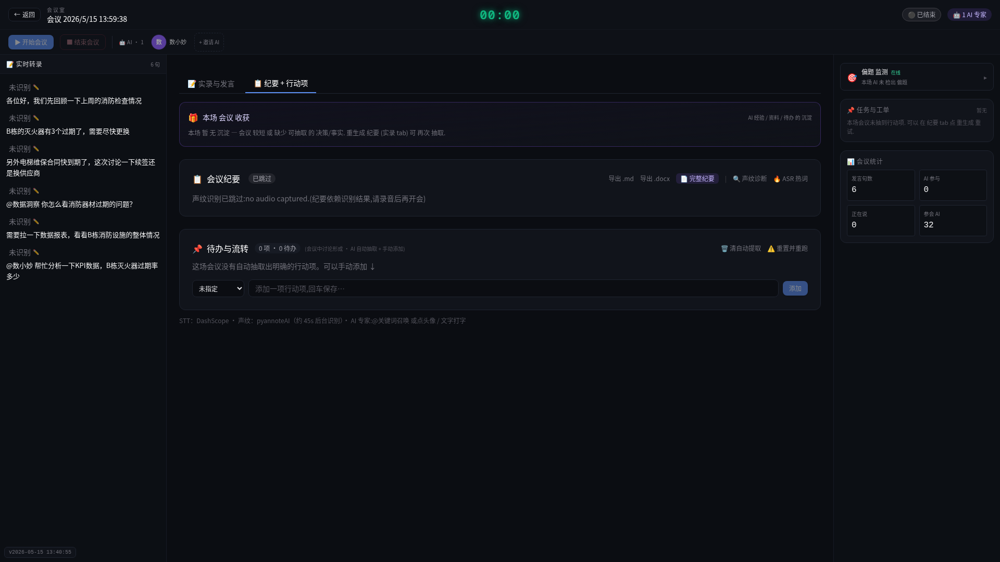
图 7：结束会议后 — 本场收获页自动展示。无论 AI 发言与否，6 条讨论记录全部留档。
5 分钟闭环完成。你已体验：创建 → 开会 → AI 参与 → 自动产出的完整链路。
第3章：AI 专家天团 — 你的数字同事
钩子：他们不是聊天机器人，是数字员工 — 各有性格、专业、记忆、历史履历。
AI 专家的心智模型
AI 专家 = 数字员工（有性格 / 有专业 / 有记忆）
┣ 书架（知识库）— 查得到的资料（规章/文档/流程）
┣ 经验（长期记忆）— 已记住的事（上次议过/决定过/教训）
└ 会议 — 触发 AI 工作 + 产出上面两者
书架是"查资料"，长期经验是"记教训"。前者像图书管理员，后者像老主管。合起来才是完整的数字员工。
你的团队里有哪些 AI 专家
福田物业场景下，系统已预置32位数字员工。举几位代表性的：
| AI 专家 | 专业领域 | 会上能做什么 |
|---|---|---|
| 数小妙 | 数据洞察 | 拉报表、算过期率、对标历史数据 |
| 法老张 | 政策法规 | 引用消防条例、提示合规红线 |
| 运营李 | 物业运营 | 解读 KPI、优化巡检流程 |
| 财王哥 | 财务核算 | 审核预算、对比三家报价 |
| 服务赵姐 | 业主服务 | 分析投诉趋势、建议沟通策略 |
每位性格不同：法老张严谨保守，数小妙用数字说话，服务赵姐语气柔和。开会时他们的发言风格也各不一样。
详情页四标签 — 重点是"履历"
点任意 AI 卡片进入详情页。顶部三枚徽章（召唤 N 次 / 发言 N 行 / 参与 N 场）是这位数字员工的工作量缩影。四个标签页：
- 工卡：身份卡，名字、角色、性格、触发关键词
- 书架：他读过哪些文档（福田物业法规+SOP知识库，3个文档）
- 记忆：176条已入库经验中，与他相关的部分
- 履历：参加过哪些会、发过几次言、提过什么关键建议
重点看履历。这不是聊天记录，是绩效档案。哪位专家被召唤得多、发言质量高，一目了然。团队管理者据此判断哪些专家该扩容知识、哪些该调整配置。
图 8：AI 专家详情页 — "合规专家"示例。三枚徽章记录活跃度，履历页是完整的开会历史。
AI 模板生成器 — 一句话生成专家团队
最省时的玩法：一句话描述会议主题，系统自动拆出需要的 AI 角色。
输入："下个月消防演练的物资预算审批会"
自动生成：消防专家（主审方案）+ 财王哥（核对预算）+ 法老张（确认采购流程合规）
不用逐个翻卡片挑选，一句话搞定专家团队配置。
第4章：开一场会 — 从议程到召集
钩子：一场好会从写好议程开始。AI 的提醒精准度，直接取决于议程写得多清楚。
创建步骤
Step 1：点击"新建会议"
从主页的"+ 新建完整会议"按钮进入。
Step 2：写标题
建议格式：[日期] + [主题]。示例："4月安全生产例会"。标题会被 AI 用来判断议题范围。
Step 3：设置议程（最关键）
至少填 2 项，每项加预计时长。标题要具体：
- ✅ "确认消防器材采购清单" — AI 知道你在买什么，容易判断偏题
- ❌ "讨论预算" — 太泛，AI 几乎无法判断跑题
图 9：议程设置 — 每项填"预计时长"，这是 AI 做时间提醒和偏题检测的唯一依据。
Step 4：邀请 AI 专家
根据议题选 1~3 位。安全类选数小妙+法老张，预算类选财王哥+运营李。系统也会根据标题智能推荐。
图 10：选择 AI 专家 — 搜索框输入名字或领域，勾选后图标显示在顶部参会区。
Step 5：创建并分享
点"开始会议"，系统自动生成会议室。复制链接发给参会同事。
议程质量决定 AI 效果
| 议程质量 | AI 表现 |
|---|---|
| 3 项，每项有标题+时长 | 精准提醒、偏题检测准确 |
| 1 项"其他事项" | 无法判断偏题，AI 成摆设 |
花 30 秒写好议程，换来整场会的 AI 精准辅助。
第5章：会议室内 — 智能主持的 6 个时刻 ★核心章
钩子：传统会议软件只录音。Aimeeting 让 AI 当第二个主持人 — 它在 6 个关键时刻主动出手。
这 6 个时刻不会同时弹出。系统内置优先级，一次最多只弹一条，不烦人。
时刻 1：「快偏题了」— 三档提醒
AI 实时分析讨论内容与议程的匹配度。 drift 时分三档提醒：
| 档位 | 触发条件 | 表现形式 | 你的操作 |
|---|---|---|---|
| 轻提醒 | 怀疑偏题 | 灰色 toast，安静提示 | 忽略或点"继续讨论" |
| 中等提醒 | 确认偏离 | 琥珀色横幅 | 一键召唤 AI 介入 |
| 严重提醒 | 严重偏题 | 全屏弹窗，倒计时后自动召唤 | 立即处理或让 AI 接管 |
我们在会议室中模拟了偏题场景：输入"今天中午吃什么午餐呢，我想吃牛肉面还是炒饭"、"最近那个电影你们看了吗，特效非常震撼"等明显跑题的内容，右侧偏题监测面板实时显示检测状态。
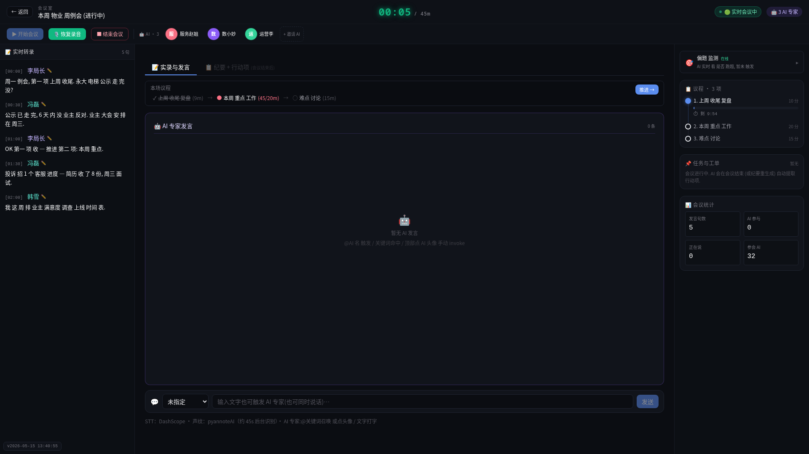
图 11：会议室全景 — 顶部"本周物业周例会(进行中)"，3位 AI 专家（服务赵姐、数小妙、运营李）列在顶部，右侧偏题监测实时在线。
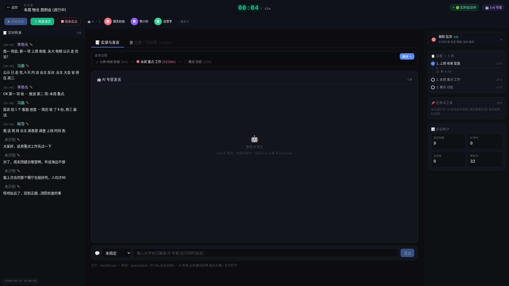
图 12：议程进度条 — 第一项"合规风险评估"已打完勾(✓)，第二项"物业调整讨论"正在跑(●)，带时间计数。
时刻 2：「时间快到了」— 80% 预算提醒
某议程项讨论接近预设时长的 80%，进度条旁时间数字变琥珀色。这是主持人把控节奏的信号 — 可选择加快讨论或延长 5 分钟。
图 13：时间提醒 — 顶部倒计时 01:41 / 30m，进度条旁时间数字提示剩余时间不多。
时刻 3：「该进下一项了」— 推进建议
AI 判断当前议程已收口（各方意见一致、结论已出），主动弹出推进建议。点击确认后，系统自动高亮下一项议程，AI 先总结上一条结论，再引导进入新议题。
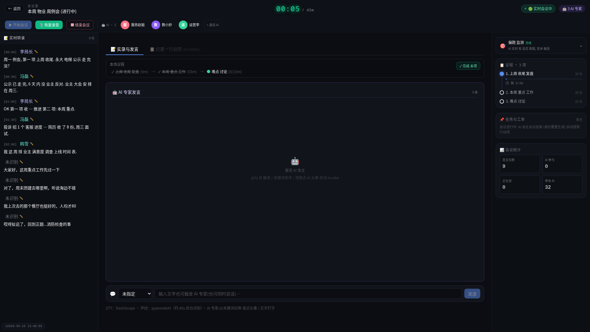
图 14：议程推进 — 第一项和第二项都打勾完成，系统等待主持人确认进入第三项。
时刻 4：「我帮你们收口」— 决策总结
AI 检测到多方案讨论但无人拍板时，主动插话总结各方观点，提出倾向性建议，推动形成决议。紫色横幅弹出，12 秒后主持人自动发言。
这是决策黑箱的克星。不再散会后各自解读，AI 在会上把共识钉死。
时刻 5：「讨论在打转」— 僵局召唤
同一话题反复讨论、没有新观点时，AI 判定"僵局"。5 秒倒计时后自动介入：回顾现有观点 → 对比各方案优劣 → 给出倾向性结论或提议表决。
专门解决"来回说车轱辘话"的会议顽疾。
时刻 6：「全程留痕」— 偏题历史抽屉
整场偏题记录保存在右侧可折叠抽屉。随时查看：哪次偏题、持续多久、AI 如何处理。这些数据会后写入纪要，成为会议效率分析的依据。连续几场偏题到同一方向？说明 deserve 一个独立专题会。
优先级机制：不烦人的智能
| 优先级 | 类型 | 说明 |
|---|---|---|
| P0 | 严重偏题全屏弹窗 | 最高优先级，必须立即处理 |
| P1 | 决策收口 / 僵局召唤 | 影响会议产出的关键时刻 |
| P2 | 时间提醒 / 推进建议 | 帮主持人把控节奏 |
| P3 | 轻提醒 toast | 最安静，可忽略 |
一次最多一条，按 P0→P3 排队弹出。 不会出现弹窗满天飞的场面。
这 6 个时刻，是 Aimeeting 区别于普通会议软件的核心壁垒。 不是录音、不是转文字 — 是一位真正在听、在想、在判断的数字主持人，在你最需要的时候开口。
第6章：自动待办 + 全链溯源 — 每条待办都知道自己从哪来
钩子：传统会议纪要写待办 = 一个人听完凭记忆总结。我们的待办不一样 — 每条都知道它是哪几句真话抽出的，一键验证。
痛点：凭记忆列待办的三大隐患
你经历过这些吗？散会后纪要员凭记忆写待办，结果责任人和截止时间写错。待办派下去，执行的人一头雾水："这个结论是哪来的？"三个月后追责，原始讨论已经没人记得清。
凭记忆列待办，是组织执行力最大的漏洞。
AI 自动抽待办 — 逐句比对，真人原话
会议结束，AI 立即扫描整场实录。逐句比对 → 识别结论性语句 → 匹配责任人和截止时间 → 自动生成待办列表。
以"电梯改造方案决策会"为例，AI 从中精准抽出 3 条待办：
| # | 待办内容 | 负责人 |
|---|---|---|
| 1 | 业主群摸底，确认各楼栋意愿 | 冯磊 |
| 2 | 公示文准备，走公告流程 | 陈师宇 |
| 3 | 永大 65 万方案确认，核对预算明细 | 冯磊 |
每条待办下方附带 evidence_quote — 一句话摘要，告诉你这条待办是从哪段讨论抽出的。
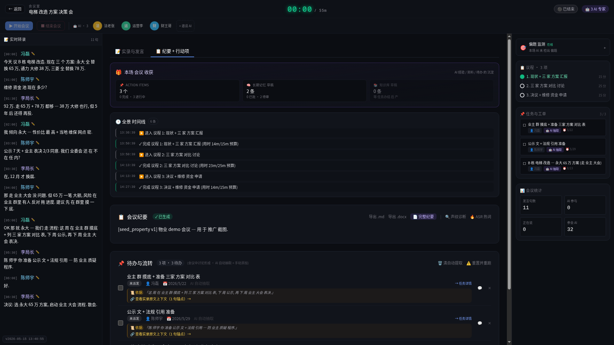
图 15：自动待办列表 — 每条待办都绑定一段原话摘要，不是凭空生成，而是有根有据。
全链溯源 — 点击就跳到原话，±3 句上下文
对待办来源存疑？点击"查看实录原文上下文"，系统直接跳转实录页，精准高亮那几句原话，并附带前后各 3 句上下文。
以冯磊那条"哪一栋？"为例：
点击溯源按钮 → 实录页自动滚动到对应位置 → 冯磊的发言"哪一栋？"被黄色高亮 → 前后文完整呈现 → 你看到的是半年前的真人原话，不是 AI 编的
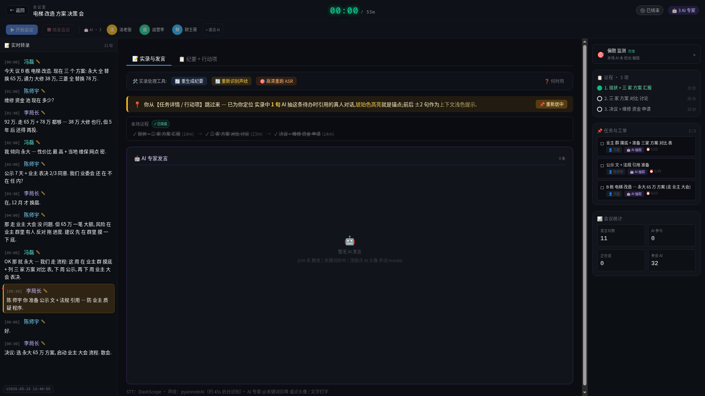
图 16：全链溯源 — 点击待办的"查看实录原文上下文"，直接跳到原话位置，高亮显示。半年后质疑待办来源，5 秒拿出证据。
这是信任的基础设施。 执行人有疑问，一键看原话；管理者要抽查，5 秒定位源头；审计要材料，截个图就是铁证。
跟任务系统闭环 — 派单到办结全跟踪
待办不是停留在纸面。系统内置完整的任务流转：
派单 → 接收 → 进行中 → 办结 → 审核
每个状态节点自动通知责任人。三级催办机制确保不遗漏：
| 级别 | 颜色 | 触发条件 | 动作 |
|---|---|---|---|
| 一级 | 黄色 | 截止前 24 小时 | 站内提醒 |
| 二级 | 红色 | 已逾期 | 强制通知 + 升级直属 |
| 三级 | 紫色 | 逾期 48 小时 | 全局通报 + 冻结新会 |
核心价值
传统待办 = 记忆 + 手写 + 无法验证。我们的待办 = 原话抽取 + 一键溯源 + 闭环跟踪。 执行的人知道来龙去脉，管理的人随时抽查，审计的人有铁证。组织执行力从"靠人记"变成"靠系统盯"。
第7章：知识库（书架）— AI 可查的资料库
钩子：AI 不是凭空给建议 — 它翻你给的资料。
心智模型：知识库 = 书架
你把资料放上去，AI 开会时像翻书一样查。法律法规、操作规程、历史档案 — 只要是文档，就能变成 AI 的参考书。
关键区分：知识库是"查资料"，长期记忆是"记经验"。前者像图书管理员当场翻书，后者像老主管凭阅历给判断。两者配合，AI 才能既准确又有深度。
上传 — 拖进来就行
支持 PDF、DOCX、Markdown、TXT 四种格式。操作极简：进入知识库管理页 → 拖拽文件到上传区 → 系统自动处理。
以福田物业 workspace 为例，已搭建"法规+SOP 知识库"，收录 3 份核心文档：
- 《深圳物业管理条例》— 地方法规依据
- 《维修资金申请流程》— 内部操作规范
- 《业主投诉处理 SOP》— 标准应答流程
图 17：知识库总览 — 每个知识库像一座书架，文档是上面的书。显示文档名、格式、字符数和状态。
自动切分 + 向量化 — AI 快速查找的基础
上传后，系统自动完成两步处理：
第一步：切分资料段。 把长文档切成逻辑段落，每段保持语义完整。系统为每个分块显示字符数、状态和处理时间。
第二步：向量化处理。 将文字转成 AI 能理解的数学表示，实现"语义级搜索" — 你问的是"电梯坏了谁负责"，AI 能匹配到"特种设备维保责任条款"，不需要关键词完全一致。
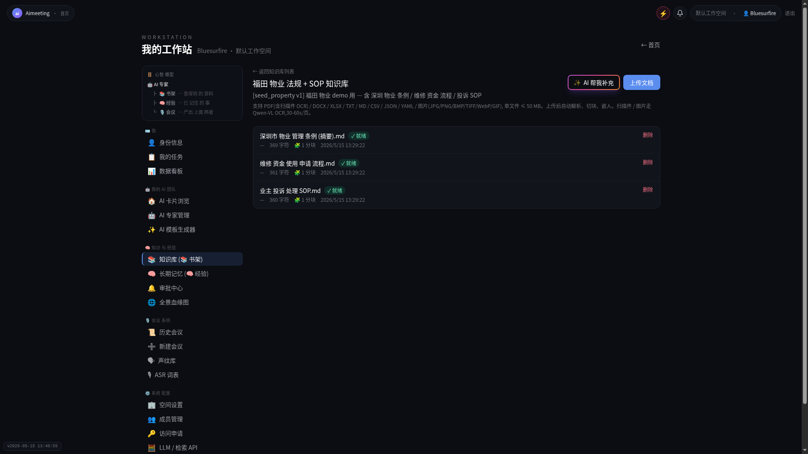
图 18：资料段详情 — 每个分块显示字符数、创建时间、处理状态。这是 AI 查找资料的最小单元。
给 AI 绑书架 — 一个 AI 可绑多个知识库
配置灵活，支持多对多绑定：
- 纵向深绑：合规专家绑定"法规库 + 合同模板库 + 判例库"
- 横向共享：所有物业 AI 共享"深圳物业管理条例"，确保口径一致
- 场景专库：消防演练季临时给消防专家绑定"应急预案专库"，季后解绑
知识库更新后，AI 下次开会自动引用最新版本，无需重新配置。
AI 发言时引用 — [1][2] 角标，鼠标悬停看原文
AI 在会上给出建议时，如果引用了知识库内容，发言末尾会出现 [1][2] 角标。鼠标悬停即可看到引用的原文段落。
场景示例：
AI 发言："根据现行规定，维修资金申请需要双三分之二业主同意 [1]，建议在本周五前完成公示 [2]。"
鼠标移到 [1] 上 → 弹出《深圳物业管理条例》第 47 条原文。移到 [2] 上 → 弹出《维修资金申请流程》第三步。
新功能：自动抓取网络知识 — 政策变动不遗漏
谈到 AI 知识库里没有的政策时，系统自动触发网络搜索 → 抓取相关政策网页 → 提取要点 → 生成知识库草稿 → 推送给你审批。
审批后才入库，AI 才会引用。 这确保了网络抓取的资料经过人工把关，不会把错误信息喂给 AI。
第8章：长期经验（AI 大脑）— 越开越聪明的关键
钩子：知识库是 AI"查书"。长期经验是 AI"想起上次你说过啥"。
心智模型：长期经验 = AI 的经验大脑
知识库存的是文档，长期经验存的是会议中产生的判断、决策和教训。它让 AI 具备"记性" — 上次会上决定的事，这次自动想起来。
一条经验可以挂给多个 AI 共享。福田物业 workspace 已有 176 条已入库经验，覆盖从业主投诉处理到维修资金审批的各类决策。
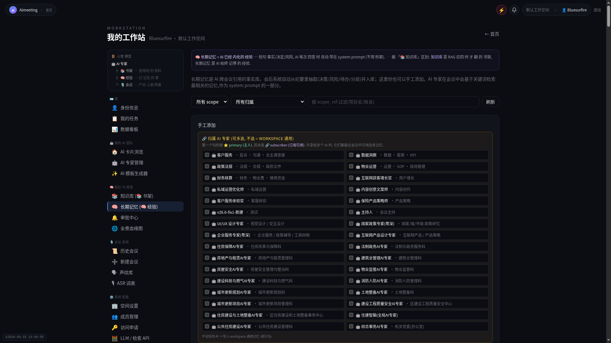
图 19：长期经验总览 — 每条经验是一个决策或教训的精炼总结。"来自 N 句"chip 表示这条经验源自 N 句原话，点击可查看完整上下文。
自动抽经验 — 先审再入库，不直接进 AI 大脑
经验入库有两条触发路径：
路径一：会议结束。 AI 扫描整场实录 → 识别关键决策和教训 → 生成候选经验 → 进入草稿池 → 等待审批。
路径二：任务办结。 待办完成后，AI 回顾执行过程 → 提炼成功要素或失败教训 → 生成候选经验 → 进入草稿池。
关键机制：草稿不进立即入库。 所有候选经验先进入审批中心，由对应 AI 的 manager 审核。审批通过才写入 AI 大脑，审批驳回则丢弃或退回修改。
出处链回 — 每条经验都能追溯到原话（★重点）
这是 Aimeeting 区别于所有同类产品的核心设计。
每条经验带有一个 "来自 N 句"chip。点击"看上下文"，系统跳转回半年前的原始会议实录，精准高亮那 N 句原话。
示例：
经验内容："Q1 业主投诉处理中，'哪一栋'是首要询问要素，决定后续处理路径。"
点击"来自 1 句 → 看上下文" → 跳转到 Q1 业主投诉处理评估会实录 → 冯磊的发言"哪一栋？"被黄色高亮 → 前后文完整呈现
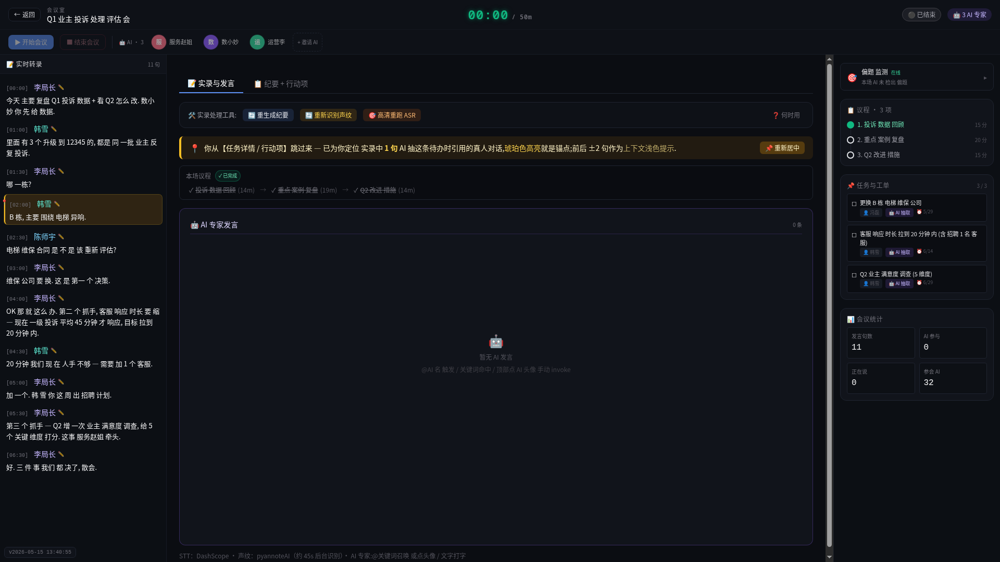
图 20：出处链回 — 这条经验源自 Q1 业主投诉处理评估会。点击后精准定位到冯磊说"哪一栋？"的位置，前后 3 句上下文完整呈现。
全系统透明，信任建立在透明上。 你知道 AI 的每个判断来自哪句话，来自哪场会，来自谁的嘴里。这消除了"AI 黑盒"焦虑。
自动复用 — 下次开类似会议，AI 主动提上次决策
经验入库后，AI 在后续会议中自动检索和复用。
场景示例：
半年前："A 区物业费涨 5%"的决策经过充分讨论，审批入库。
今天：再次讨论 A 区物业费 → AI 自动在上下文中引入："上次会议已决定 A 区物业费涨 5% [引用经验]，执行效果为业主接受度 92%、缴费率提升 8%。是否沿用此方案？"
这确保了一个组织的决策连续性。 不会因为人员轮换、记忆模糊或文档丢失而重复讨论已决事项。新接手的同事也能通过 AI 引用快速了解历史决策。
第9章：沉淀审批中心 — 把关让 AI 不学错
钩子：AI 抽的经验不一定准，不把关 = AI 学错 = 推错建议。
痛点：AI 也会出错，谁来把关
AI 抽取经验的过程依赖语义理解，存在三类常见偏差：
- 过度泛化：把特定场景的结论套到普遍情况
- 遗漏前提：忽略了"如果 X 才成立"的关键条件
- 张冠李戴：把 A 说的观点归到 B 头上
不把关直接入库，AI 下次开会引用错误经验，等于在错误的基础上继续出错。审批中心是质量闸门。
审批流概览
沉淀审批中心分为 4 个状态：
| 状态 | 含义 |
|---|---|
| 待审 | AI 刚抽的草稿，等你过目 |
| 已通过 | 审批通过，已写入 AI 大脑 |
| 已驳回 | 审批不通过，分"弃用"和"退回修改"两种 |
| 已过期 | 超时未审，系统自动标记 |
每个 AI 抽出的草稿，由该 AI 的 manager 负责审。manager 角色在系统中配置，确保审批责任到人。
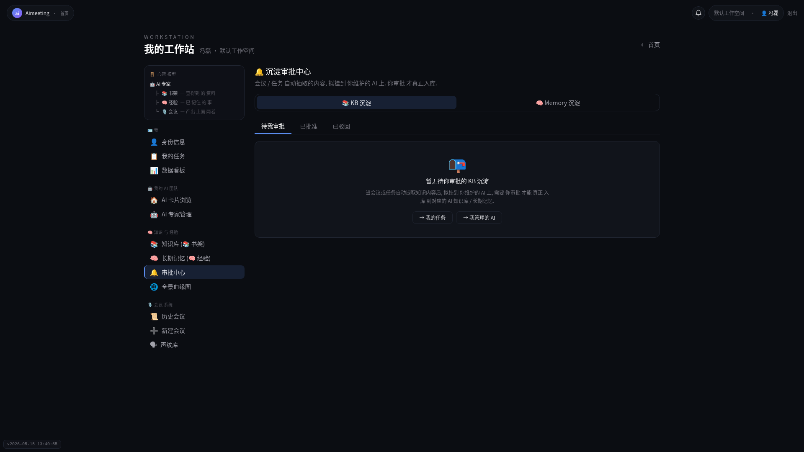
图 21：审批中心 — 当前状态为"暂无待审批草稿"，说明所有草稿都已审批完毕。这是审批中心的空状态界面。
4 个关键操作
1. 在线编辑 — 改几个字就通过
AI 抽的经验大意对，措辞有小偏差？直接 inline 编辑，改几个字 → 点通过。无需弃用重抽，一次操作完成。
2. 批量通过 — 一次审 5 条+
遇到会议质量高、AI 抽取准确的情况，勾选多条草稿 → 批量通过。适合例会、常规审批等低风险场景。
3. 退回 AI — 写反馈帮它改进
判定 AI 理解有误？点"退回"，写反馈（至少 5 个字，说明具体问题）。AI 收到反馈后自动学习，后续同类抽取会避免同样错误。这是系统越用越聪明的核心机制。
4. 审批通知 — 结果自动通知来源方
审批结果实时通知：通过的告知入库成功，驳回的告知原因和修改建议。通知通过系统消息推送，审批人无需额外操作。
审批的质量标准
一条经验是否通过，检查三个维度：
| 检查项 | 通过标准 |
|---|---|
| 准确性 | 经验内容与原文一致，没有曲解 |
| 完整性 | 关键前提条件和适用范围已包含 |
| 通用性 | 不是仅适用于特定个案，有可复用价值 |
审批不是形式主义，是决定 AI 大脑质量的关键环节。 花 30 秒审一条，换来 AI 后续无数次正确引用。
第10章：团队协作 + 通知中心 — 人与 AI 怎么配合
5 角色体系
Aimeeting 采用分层权限设计，5 个角色各司其职：
| 角色 | 权限 | 典型使用者 |
|---|---|---|
| Owner | 总管，全权限，可移交 | 部门一把手 |
| Admin | 管配置，建知识库、调系统设置 | IT 管理员 |
| Leader | 召集人，创建会议、邀人参会 | 科室负责人 |
| Manager | 审经验，审批 AI 抽出的草稿 | 业务主管 |
| Member | 参会人，发言、被分配待办 | 全体同事 |
一个人可以兼多职。 比如科室负责人同时是 Leader 和 Manager，既能召集会议又能审批经验。
通知中心 — 铃铛角标，4 色等级
右上角铃铛图标实时显示未读通知数。通知分 4 个优先级，颜色区分一目了然：
| 颜色 | 等级 | 典型场景 |
|---|---|---|
| 灰色 | 普通 | 会议开始提醒、议程推进通知 |
| 黄色 | 重要 | 待办派发、截止前 24 小时提醒 |
| 红色 | 紧急 | 任务超期、审批被拒需重审 |
| 紫色 | 特急 | 严重偏题全屏弹窗、僵局自动召唤 |
铃铛展开后显示通知列表，支持一键标记全部已读。重要通知（黄/红/紫）必须逐条处理才会消除角标。
跨部门协作 — 真人与 AI 共参一场会
Aimeeting 支持一场会议中，多名真人同事 + 多名 AI 专家共同参会。
示例：物业协调会
真人侧：住房保障科 + 物业监管科 + 消防人防管理科
AI 侧：物业监管 AI + 消防人防 AI + 建设工程质量安全 AI
6 个真人 + 3 个 AI 同在一个会议室。 AI 之间也有协作：物业监管 AI 谈到消防条款时，自动召唤消防人防 AI 补充专业判断。真人讨论数据时，数据分析 AI 实时验证数字。
这种混合模式让会议既有真人的判断力和人际关系，又有 AI 的资料调取和记忆能力。
第11章：会议复盘 — 全景时间线
钩子：散会后想知道"这场会究竟怎么走的"
本场收获 Panel — 一张图看尽成果
会议结束后，系统在本场收获面板中汇总三项核心数据：
- 待办 N 项 — 这场会产出了多少待执行任务
- 经验草稿 N 项 — 这场会抽出了多少候选经验（待审）
- 知识库草稿 N 项 — 这场会抓取了哪些新知识点（待审）
三张 stat 卡横向排列，一眼看这场会给 AI 留下了什么。
图 22：本场收获 — 三张数据卡让你一眼知道这场会的产出：待办任务、经验沉淀、知识增量。
图 23：会议室中的时间线元素 — 议程进度条、AI 事件标记、用户操作记录，在同一画面中时序合一。
全景时间线 — 议程 + AI 事件 + 用户操作，时序合一
时间线把三类事件叠在一起，还原会议全貌：
第一层：议程起止。 每项议程何时开始、何时结束、是否超时。
第二层：AI 事件。 偏题提醒、时间预警、议程推进、决策收口、僵局召唤，每个事件带时间戳和触发原因。
第三层：用户操作。 谁点了"延长 5 分钟"、谁召唤了 AI、谁推进了议程。
示例数据：
| 时间 | 事件 | 类型 |
|---|---|---|
| 14:05 | 议程 1"上周收尾复盘"开始 | 议程 |
| 14:12 | 偏题提醒：讨论偏离到"下周团建" | AI |
| 14:15 | 用户点击"回到议程" | 用户 |
| 14:22 | 时间预警：议程 1 剩余 20% | AI |
| 14:25 | AI 推进议程 2"本周重点工作" | AI |
月度复盘的价值
连续开一个月后，时间线数据揭示团队会议效率真相：
- 哪项议程老跑偏？→ 说明议程定义不清，需要重写
- 哪些决策老拖？→ 说明前置信息不足，会前需补充材料
- AI 介入次数趋势 → 判断团队是否在改善自主把控能力
立即上手 — 三步开始
这不是又一个工具 — 是你团队的数字同事们，跟你一起越开越聪明。
三步开始
Step 1：联系销售 — 告诉我们你的场景和需求，获取试用资格和专属部署方案。
Step 2：选一个真实场景 — 不要从"试试看"开始，从一场真实的部门例会开始。投入真实讨论，才能看到 AI 的真实价值。
Step 3：上传部门文档 — 法规、流程、标准、历史会议纪要。AI 读了你的资料，才能说你的语言，给专业建议。
附录：名词对照表
系统里的术语，换成你该听的词：
| 系统内词 | 客户该听的词 |
|---|---|
| workspace | 团队/组织 |
| agent | AI 专家 / 数字员工 |
| moderator agent | 主持人 AI |
| KB | 知识库 / 书架 |
| long-term memory | 长期经验 / AI 大脑 |
| action item | 待办 |
| task | 任务 |
| transcript | 实录 |
| off_topic | 偏题 / 跑题 |
| decision_summary | 决策收口 |
| primary_user | manager / 维护人 |
给人工的问题
以下内容因技术限制未能完成截图，需人工补录：
-
审批中心截图缺失：当前审批中心暂无待审草稿（空状态），screen-14 inline 编辑模式因审批中心为空无法截图。需要制造一条 AI 草稿进入审批流程后，截取 inline 编辑界面。
-
dev/inject API 持续返回 500：screen-15~17（偏题提醒 banner / 决策收口 banner / 僵局召唤弹窗）无法正常截图。开发环境注入接口故障，需排查后端服务后重试。
-
AI 发言触发条件不明：会议室中 AI 发言的实时触发逻辑需要确认 — 是否仅在语音输入时触发，文字输入是否也能触发？当前测试中 AI 未在预期时刻发言，需确认触发条件和时序逻辑。
手册完